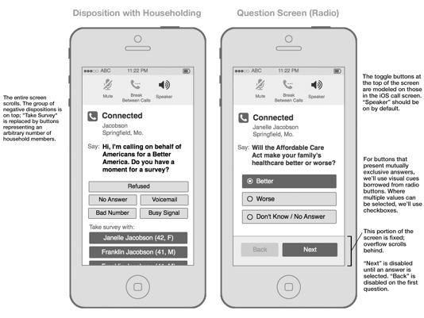
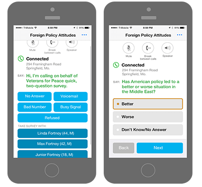
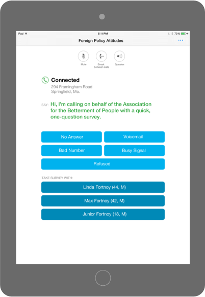
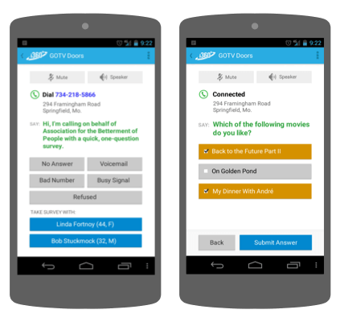
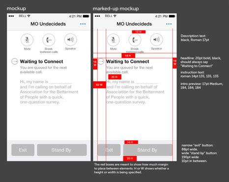
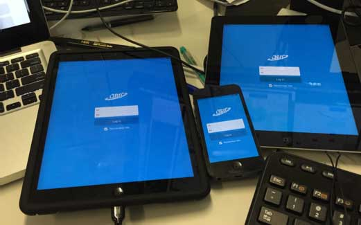

i360 Calls for iOS and Android
My role: UX, visual design
Background
{kind=link}
My employer, i360, needed a mobile front end to its Predictive Dialer application.
The Predictive Dialer was a server application that our customers, chiefly political campaigns and advocacy groups, used to administer phone surveys to targeted lists of people. Calls to survey targets were placed through the server. When connected, each call was routed to a user (typically a campaign volunteer) via a client app, which allowed the user to administer the survey and submit answers, or log other information such as wrong numbers.
At the time, i360 Calls was an aging web application that could only be used on desktop browsers. Management wanted a friendlier solution, and one that could be used on users’ own mobile devices. Therefore, they elected to develop an improved web app as well as native iOS and Android apps.
{kind=link}
The Users
The users of our app were mainly campaign and non-profit volunteers who could not be assumed to have any special expertise besides basic web-browsing skills. Unfortunately, I didn’t have access to testers or users in our target demographic. On the other hand, our own staff, including non-technical users, used and tested this app and provided feedback.
Challenges and Special Considerations
Once connected to the server, the app’s UI consisted not only of the display but also spoken instructions and audio cues supplied by the server. The on-screen UI needed to complement the server-based spoken instructions and cues.
{kind=link}
The management was highly motivated to get the apps developed quickly and didn’t budget time for a design phase, so I had to work fast to produce wireframes, mockups, and detailed guidance for developers.
Design & Development
I was responsible for all phases of design for this app, from wireframes to design comps for iOS and Android through testing for design issues, as well as writing copy for prompts, labels, and error messages.
Following Apple's guidance, and its release of new screen sizes with the iPhone 6 and 6+, I directed our developers to use Auto Layout rather than coding for fixed screen sizes and provided detailed direction on how the UI should adapt.
{kind=link}
I tried to be faithful to each platform in terms aesthetics and UI conventions while also aiming for consistency across platforms.
Our iOS and Android developers needed lots of guidance to accurately translate the design mocks to the finished app. I would provide feedback in the form of detailed visual guides as the development work progressed. I also provided all of the graphic assets our developers needed.
{kind=link}
I used a number of my own devices, including several running iOS and one Android tablet, to help test a variety of screen sizes and models.
{kind=link}
At the time I left the company, the app was in its final testing and bug-fixing phase. It has by now entered production and has been used by thousands of users.
Results & Conclusion
I left the company just as the apps were finishing the QA process, so I unfortunately wasn’t there ot guage the initial feedback about the finished apps. I hear from my former colleagues that the apps have been quite well received by i360’s customers and users.